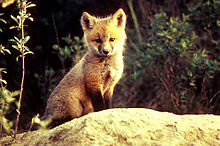

lo Scoiattolo
Lo scoiattolo è l'animale del bosco più noto e simpatico tra i roditori, non è aggressivo, ma non ama la compagnia di estranei, da cui fugge e si nasconde molto bene.
Ha dimensioni medie. La sua lunghezza varia da 35-45 centimetri, dicui 15-20 centimetri di coda. Pesa all'incirca da 230-450 g. Ha un corpo agile, slanciato e abile nell'arrampicarsi sugli alberi.
il cervo
Il cervo è un mammifero che ha 2 corna (o per meglio dire "palchi" o "trofei"), 4 zampe e può essere lungo 1,90 m e pesare 250 kg. Una caratteristica molto curiosa è che il cervo perde ogni anno i palchi. Essi ricresceranno nell'identica forma e posizione dell'anno precedente ma con una ramificazione in più. Negli individui più deboli i palchi pesano 9-10 kg ma nei più vecchi possono pesare 16-18 kg, i cervi maschi si "vantano" delle loro corna e le utilizzano anche per attirare le femmine. Particolare curioso: quando un animale si ferisce la parte inferiore della zampa destra o sul bordo dello zoccolo, le sue corna crescono molto meno da quel lato.
Il camoscio
Il corpo del camoscio si è perfettamente adattato al suo ambiente. Le sue zampe sono robuste e muscolose ed il passo è molto lungo perché è privo di clavicole che gli consentono di saltare con grande facilità sulle pareti rocciose delle vette. Inoltre la conformazione particolare degli arti e la disposizione obliqua delle scapole gli procura un effetto molla.
la volpe


Le volpi più grandi sono lunghe da 82-90 cm mentre le più piccole misurano fino a 50-90 cm. L'altezza alla spalla è di 35-40 cm. La coda è lunga 35 cm. Il colore della parte superiore è bruno e arancione e la parte inferiore è biancastra
La volpe vive nei boschi e sulle montagne, nei prati nelle città e spesso nei paesi. È diffusa in Europa dove vive fino a 2800 metri d'altezza.
l'orso
L'orso è un grosso animale(65-1000 kg a seconda della specie), dotato di una folta pelliccia. Ha zampe grosse e una coda piuttosto corta. È diffuso in tutto il mondo, dalle foreste al polo nord. L'orso è onnivoro, cioè mangia di tutto dalla frutta alla carne al pesce. Mangia anche licheni, radici e bacche. È goloso di miele.